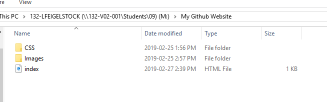
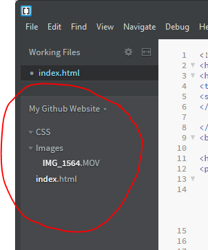
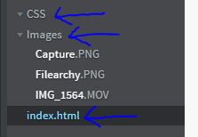

Jump to Sections
Making a Webpage With Brackets
Encoding an Image With "Adobe Media Encoder"
How to Make a Webpage Using Brackets
Making a webpage with brackets is quite easy. Here's the steps...
- First you need to create your "filearchy." This consists of an index.html file, and images or assets file, and a CCS file. First you have to make a new file. You can name this file anything you like. Then inside that file you need to make a CCS and an images or assets file. 
- Next, you need to open your files in Brackets. 
- Once you have done that you can use your index.html to input you html scripts into your website. Use your images or assets folder to put visuals on your website and use your CCS folder to give your website some design.> 
- Keep adding to your website from there!
How to Encode Videos Using Adobe Media Encoder
Sometimes you need to make your videos smaller to put them on a website. Here's the steps...
- First you need to open Adone Media Encoder with the video you'd like to encode.
- Next, select the video you are going to encode.
- Here you can choose the options for your project.
- Once you're done you can export press "ok" and the video is ready to be used!


Below is the video I encoded. Remember that before I encoded this video it was 37.6 mb and now its only 23 mb. Encoding helps!